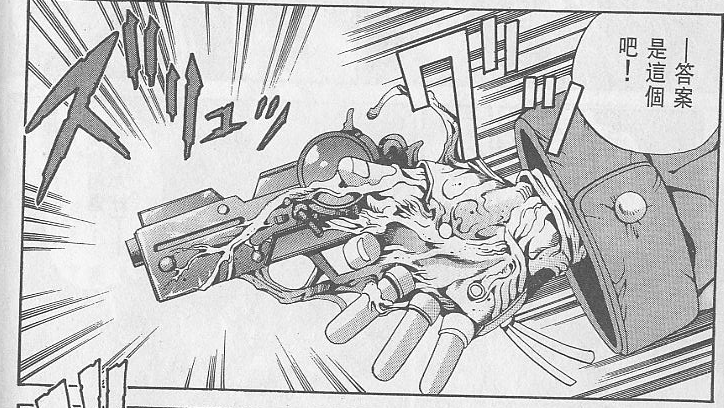

一次性改造

Eatman螺絲俠能力組
C+2400
沒人知道他是誰，他從哪里來，他活了多久，人們只知道他是世界第一的冒險家——波特·克拉克
現在你的牙齒在破壞物品時視作可以忽略5點硬度（破壞物品規則選開），你不再需要食用通常意義上的食物就能存活。你的味覺也發生了一定的變化，金屬、塑料、木頭等材料或制品對于你來說就是一道道菜肴（不一定好吃），而一些小型零件（比如螺絲）對于你來說就是零食。
被你吃下的金屬、塑料、木頭、機油等材料或完整制品（限定自然本質/科技本質，由于規則原因載具不算在內，st也可以選擇開放載具）將會在你體內還原重組并儲存起來。存儲的空間視為無限，視為一種異空間效果，并且不會令你的體型或體重產生任何變化（也就是說理論上你可以儲存一艘宇宙戰艦，前提是你先把它吃完）。你可以以一個整輪動作，將被你儲存起來的一件材料或完整制品，從你手上“長”出來（也可以是其他地方，比如口部或背部）。你可以選擇將其完全“長”出來，脫離你的身體再使用；或者只“長”一部分出來，這不會影響正常使用。但無論“長”沒“長”完全，回收的方式依舊是由你自己再吃下去。對于儲存的液體（比如汽油）而言，你將其釋放的速度較慢，相當于從一個茶壺里倒水。
該能力不會影響你吃正常的食物，你依舊能夠正常進食飲水。你進食正常的食物或飲水后會正常將其消化代謝，這意味著你不能通過此能力儲存食水，包括飲用后生效的特殊藥劑等。
（如果吃下之前結構值不滿，長出來后結構值不變）
（配圖）
如果你吃下的是半成品或未組合的零件，你可以根據物品制作規則將這些制作成成品（依舊需要圖紙解讀和足夠的材料），但制作時間只需要一個整輪動作（6秒）。
注：如果是類似吃下一個完整的鬧鐘所有部件（只差拼裝就是成品的程度），st可以選擇讓pc不需要支付額外的xp和支線獎勵點直接制作。
你可以無需工具，對被你吃下并儲存的物品如常進行操作，比如修復物品或修改物品儲存的資料進行修改等。
被你吃下并儲存的物品依舊可以正常工作，比如你吃下一個電話，有人朝這個電話打過去，雖然不會發出震動或鈴聲，但你可以感覺到有人在打電話過來。當然你可以選擇不讓其正常工作。
只要你不被殺就不會死，你的壽命延長至無限，而身體將在成長至巔峰時期后停止生長（頭發依舊會變長，但不會變白，其他類似），這視作C級免疫衰老。同時你將免疫D級藥物/毒素和疾病。
技能：
額外支付D+1000，你可以以每輪1點結構值加速被你儲存的物品的修復，這種修復只能同時作用1件物品。這種回復依舊需要遵守醫療點規則，醫療點為28，每回復1點結構值消耗1點醫療點。前提依舊需要有足夠的修復材料。
從表現上你吃下一只年老失修生銹的古董懷表，然后從手上長出一只嶄新的完好的懷表，懷表上的時間還是北京時間。
你可以再支付D+1000，修復速度提高到每輪2點，醫療點提高到56。